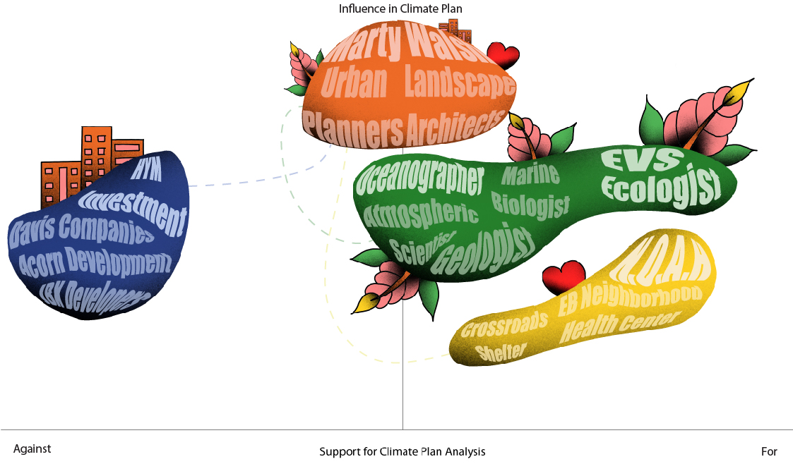

Today, cities are facing a multitude of issues spanning from social justice movements to the rising sea levels caused by climate change. These issues are forcing cities to rethink how urban centers are designed and how these new approaches will affect the majority of residents living within the city limits. Challenges such as housing equity and allowing for new private development to take place puts pressure on finding a balance between the two and climate change forces cities to take drastic measures to prepare for flooding and any displacement it may bring. In East Boston, the controversial redevelopment of Suffolk Downs exemplifies these scenarios by bringing in expensive housing units and the promise of resilient open space.This proposal analyzes the effects that large Green Resilient Infrastructure Systems (GRIS) have on urban communities and how effective they are at adapting to the consequences of climate change.
The concept of Green Resilient Infrastructure is to provide environmental management benefits to the area along with increasing the neighborhood attractiveness. As cities embrace resilience strategies (rain gardens, greenways, reintroduced marshland), it has been correlated with increasing the property value of the surrounding land leading to indirect displacement of low income and minority neighborhoods, which are disproportionately affected by climate change.The stakeholders for this project is a long list, but mainly consists of Environmental Justice organizations, the City of Boston, local institutions and universities, development firms, field experts such as environmental scientists, non-profit organizations such as N.O.A.H, and Landscape Architecture / Urban Planning firms.
To address and hopefully avoid the issues of indirect displacement, research has influenced my decisions to focus on a design intervention in East Boston, focusing on three areas; Central Square, Logan Airport and Jefferies Point. This design intervention will focus on understanding the environmental history of East Boston and how restoring certain attributes may offer an alternative method to adapt to climate change and protect residents from sea level rise, while ensuring indirect displacement is kept to a minimum. While Boston continues to move forward with their Climate Ready Boston Action Plan, I hope to synthesize alternative plans to restore ecological function in the Logan Airport District, Central Square and portions of Jefferies Point.
